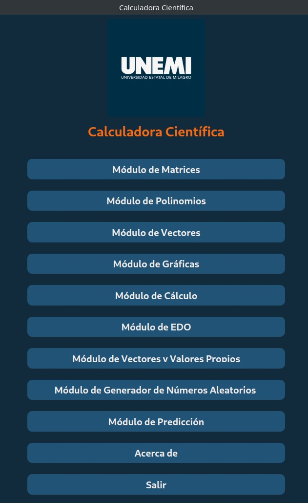

Aplicación de escritorio
Calculadora Científica
Aplicación desarrollada en Python para apoyar la resolución de problemas matemáticos mediante módulos de matrices, vectores, polinomios, cálculo, ecuaciones diferenciales, gráficas y otros cálculos académicos.
Problema que resuelve
Centraliza diferentes herramientas matemáticas en una sola aplicación con interfaz gráfica, facilitando el desarrollo y la visualización de ejercicios académicos.